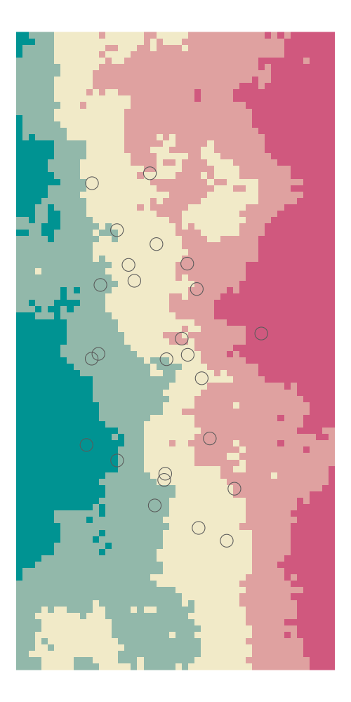

guide_sample_lsm.RmdEcologists are often interested what the effect of a certain configuration and/or composition of a landscape has on ecological processes, i.e. such as species abundance. To further complicate this, we often ask at what scale around our sampling points (where we measured the species abundance) does this have an influence? Does landscape configuration only matter in the surrounding next 500 meters or 2000 meter?
One way of inferring this influence is to subsequently buffer around our sampling points and check for this. A visual guide for this procedure could for example look like this:
library(NLMR)
library(sf)
library(purrr)
library(rcartocolor)
library(gganimate)
library(classInt)
landscape <- NLMR::nlm_fbm(50, 100, fract_dim = 1.2)
y <- landscape %>%
raster::extent() %>%
magrittr::subtract(., 10 * 2) %>%
as('SpatialPolygons') %>%
sp::spsample(n = 25, type = "random") %>%
st_as_sfc()
breaks <- landscape %>%
raster::getValues() %>%
na.omit() %>%
classInt::classIntervals(n=5, style="jenks")
landscape <- raster::cut(landscape, breaks=breaks$brks, include.lowest=T)
landscape <- raster::as.data.frame(landscape, xy = TRUE)
y_buffered <- purrr::map(seq_len(5), function(buffer_width){
st_sf(bufferwidth = rep(buffer_width, length(y)), st_buffer(y, buffer_width))
}) %>% do.call(rbind, .)
a1 <- ggplot(y_buffered) +
geom_raster(data= landscape,
aes(x,y,fill = layer)) +
coord_equal() +
geom_sf(data = y_buffered,
inherit.aes = FALSE,
alpha = 0.01) +
rcartocolor::scale_fill_carto_c(palette = "TealRose") +
theme_void() +
theme(panel.grid.major = element_line(colour = 'transparent')) +
transition_states(bufferwidth, transition_length = 1, state_length = 1) +
shadow_mark(past = TRUE) +
guides(fill = FALSE)
animate(a1, width = 500, height = 1000, duration = 6)
[to be continued]